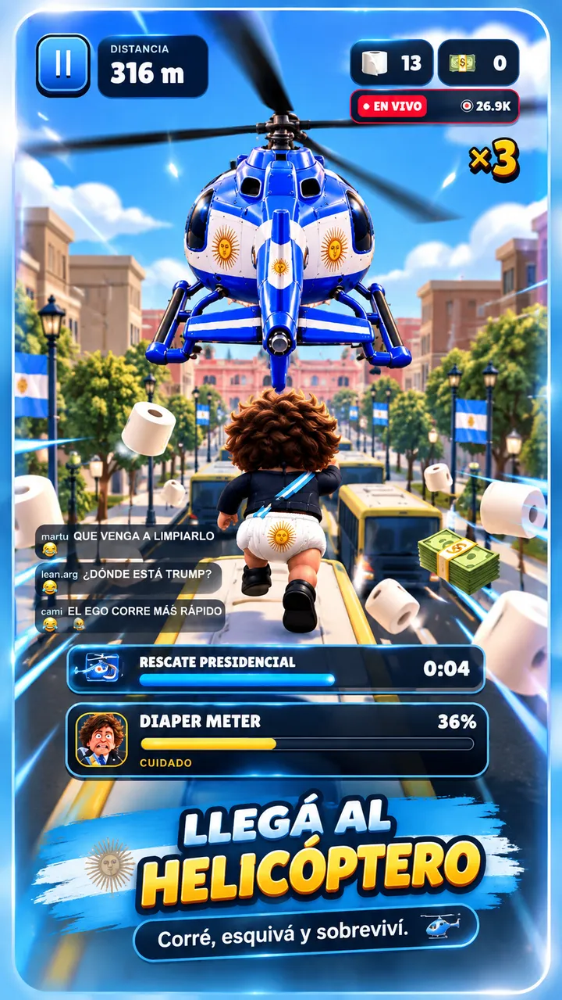

Un endless runner de sátira política internacional.
Compras dentro de la app
GRATIS · JUGÁ EN TU NAVEGADOR · SIN INSTALAR
4.8★★★★★98 k calificaciones*
#1AventuraEn Argentina*
16+EdadParodia adulta
◈Sin conexiónJugá en cualquier lugar
*Estadísticas de parodia. Calificaciones ficticias.
Las capturas del juego
VER TODO ›
EL JUEGO VIRAL

RESCATE PRESIDENCIALMISIÓN SECUNDARIA · 3%GAMEPLAY · VIDEO EN LOOPLLUVIA DE DÓLARESCOMPARTÍ Y RETÁ A TUS AMIGOS
1 de 7
Descripción
La prensa te sigue. El papel se acaba. Los líderes del mundo salen corriendo. ¿Hasta dónde llegás?
Esquivá colectivos y cámaras, juntá papel y alcanzá el helicóptero en una carrera caótica por Buenos Aires. Una parodia con un elenco de figuras políticas caricaturizadas.
AcciónArcadeHumorSátira política
Calificaciones y reseñas
VER TODO ›
4.8
★★★★★98 k calificaciones ficticias
★★★★★ 12 abr
¡La cumbre se fue al pasto!
Caos, prensa y líderes en pañales. No esperaba reírme tanto esquivando colectivos.
— Javier M. · reseña ficticia
★★★★★ 3 may
El helicóptero no espera
Cada personaje trae un desastre nuevo. Corrí tres veces más de lo que pensaba.
— Econochanta · reseña ficticia
★★★★☆ 20 jun
La prensa viene con todo
Un runner político absurdo donde nadie se salva de la cámara. Me mató el pañal.
— Libertario22 · reseña ficticia
Reseñas y usuarios inventados para esta parodia.
Novedades
VERSIÓN 1.0.9 · NOTA FICTICIA
El helicóptero ya no desaparece cuando más lo necesitás.